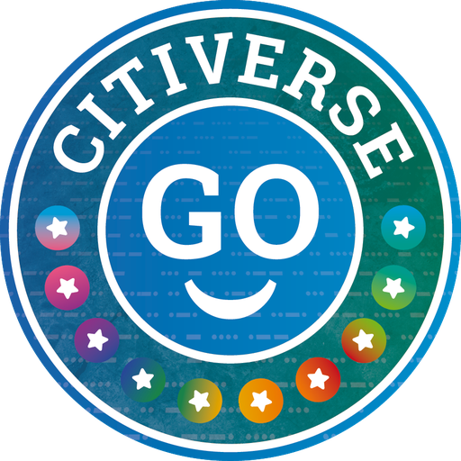

Kaart: 3D Rotterdam © Gemeente Rotterdam (CC BY 4.0)
Foto's van Wikimedia Commons, bijgesneden en verkleind:
XP, badges en thema's
Ga op pad door de stad. Op bekende plekken zit een Buddy met een digitaal probleem. Help ze en verzamel alle stempels.